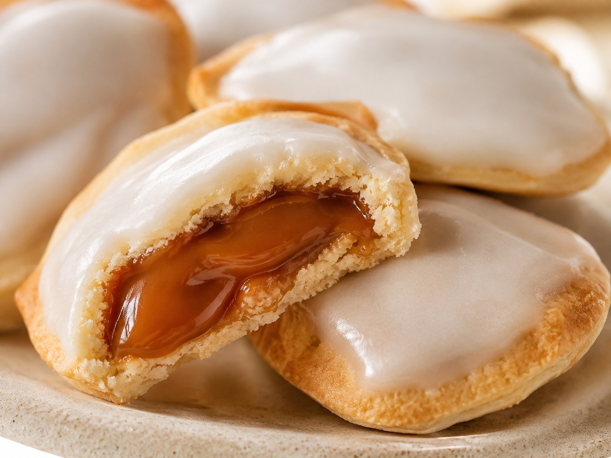
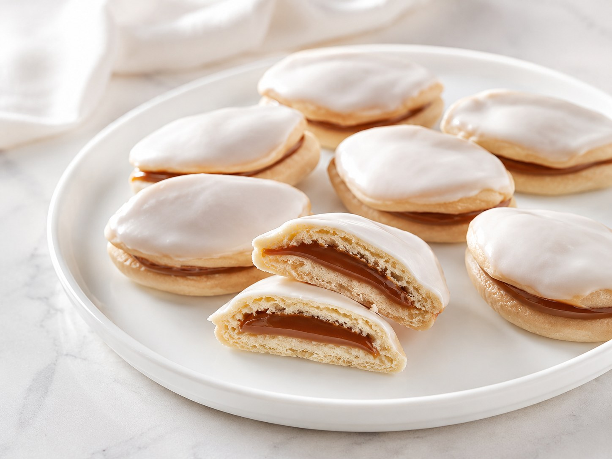
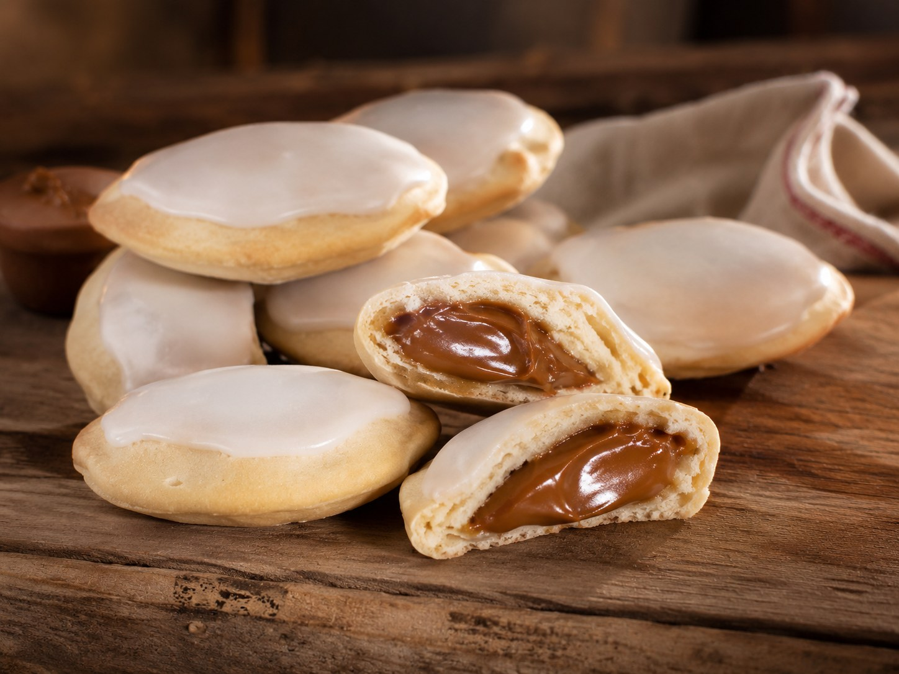
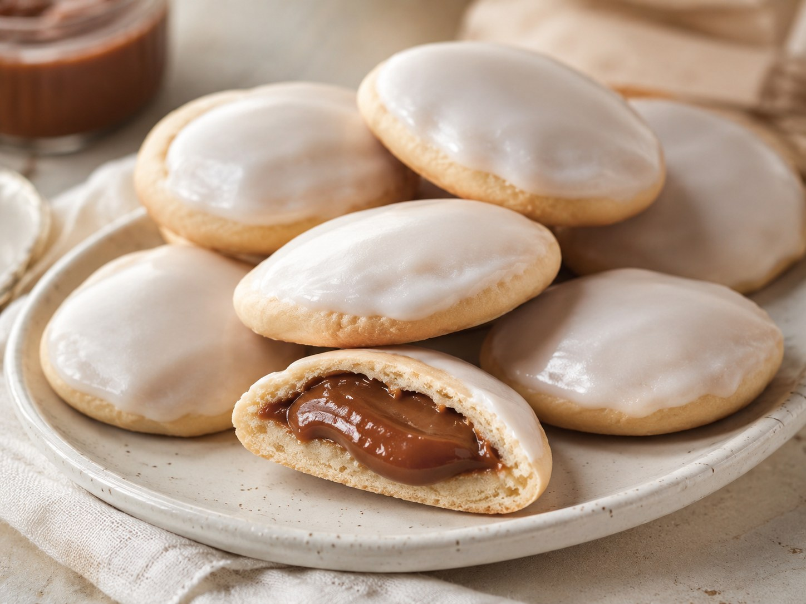

Colaciones de dulce de leche
Bien sequitas por fuera y generosas por dentro, las colaciones son una de las masitas más queridas del norte: masa fina, dulce de leche y una cubierta blanca de glasé.

Un clásico salteño
En Salta, las colaciones suelen aparecer en cumpleaños, eventos familiares y mesas preparadas para agasajar a turistas. Forman parte de esas recetas que pasan de generación en generación junto con cañoncitos, rosquetes, gaznates y otras delicias regionales.
Ingredientes
Masa y relleno
- 125 g de harina
- 1 cucharadita de polvo para hornear
- 1/2 cucharada de azúcar
- 3 yemas
- 30 ml de coñac
- 300 g de dulce de leche
Glasé
- 200 g de azúcar impalpable
- 1 cucharada de agua tibia
Preparación
- Mezclar la harina, el polvo para hornear, el azúcar, las yemas y el coñac.
- Formar una masa lisa, taparla y dejarla reposar durante 30 minutos.
- Estirar la masa bien finita, de unos 2 mm aproximadamente.
- Cortar círculos de 5 cm de diámetro y estirarlos con palote hasta que queden ovalados y finitos.
- Pinchar el centro con un tenedor para que durante la cocción se levanten los bordes.
- Llevar las piezas a una placa y cocinar 5 minutos a 200 grados.
- Rellenar los barquitos con bastante dulce de leche.
- Para el glasé, mezclar el azúcar impalpable con el agua tibia hasta lograr una pasta semilíquida.
- Cubrir las colaciones del lado del dulce de leche, dejar escurrir y esperar a que sequen.
Presentaciones


